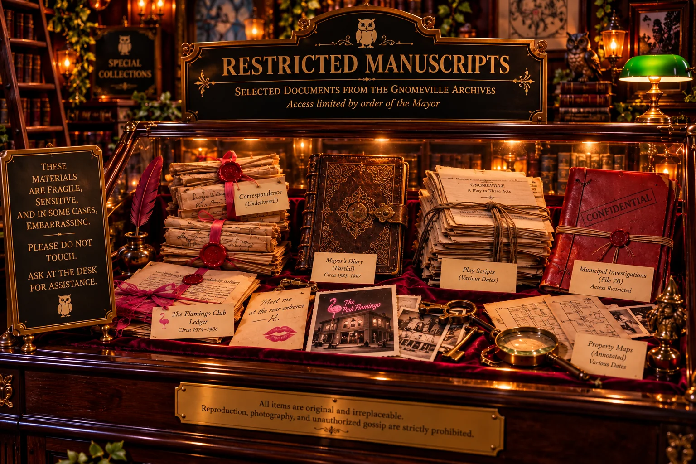

ACCESS RESTRICTEDArchive S-014 · Controlled Access
Restricted Manuscripts
Letters, ledgers, diaries, municipal investigations, and a newly cataloged collection of original theatrical scripts. Some are sensitive; several are merely embarrassing.
View Exhibit